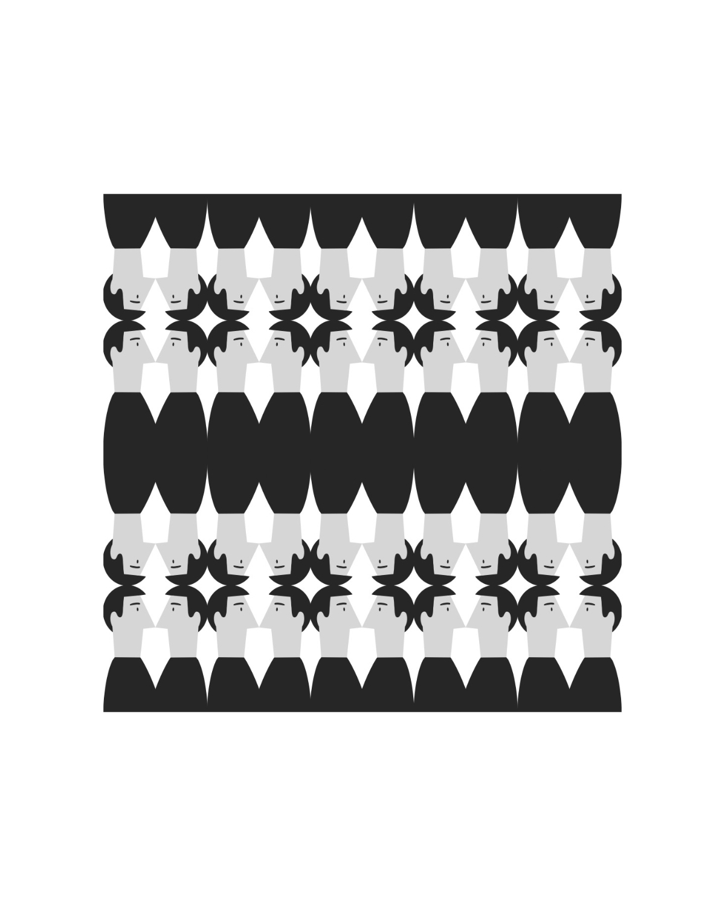

01Illustrazione
Ricerca personale e narrazione visiva
ILLUSTRAZIONE · GRAPHIC DESIGN · ART DIRECTION
Esploro idee, simboli e storie quotidiane attraverso la comunicazione visiva.
Scopri i progetti ↘01 — PROGETTI
02 — PROFILO
Sono una creativa che unisce grafica e illustrazione per esplorare le relazioni tra immagini, identità e comunicazione. La mia ricerca nasce dall’osservazione della quotidianità, dalla curiosità e dal desiderio di trasformare idee e suggestioni in forme visive. Lavoro con attenzione alla composizione, al colore e al dettaglio, cercando un equilibrio tra espressione personale e funzione comunicativa. Ogni progetto è un percorso di ricerca e sperimentazione, in cui dare alle idee una forma chiara, autentica e riconoscibile.
03 — CONTATTI
Per collaborazioni, progetti di illustrazione e comunicazione visiva, scrivimi: sarò felice di parlarne.
claudia.attenni.lavoro@gmail.com ↗